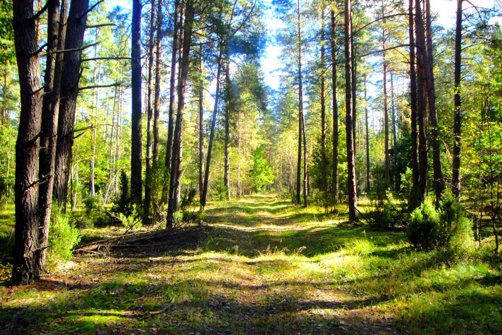

Беловежская пуща
| Главная | Софийский собор | Озеро Нарочь | Борисоглебская церковь | Брестская крепость | Мирский замок | Беловежская пуща | Несвижский замок |
|---|
 Белове́жская пу́ща (белор. Белавежская пушча, польск. Puszcza Białowieska; также Беловежская Пуща[1][2]) — наиболее крупный остаток реликтового первобытного равнинного леса, который, согласно представлениям, сложившимся в современной науке, в доисторические времена произрастал на территории Европы. Постепенно он был вырублен, но в относительно нетронутом состоянии в виде крупного массива сохранился только в Беловежском регионе на территории современных Белоруссии и Польши. Беловежскую пущу относят к экорегиону под названием «сарматский смешанный лес». Через Беловежскую пущу проходит государственная граница между Польшей и Белоруссией. Рядом с Пущей находится водораздел Балтийского и Чёрного морей. Для сохранения уникальной природы в Беловежской пуще выделены четыре функциональные зоны с различным режимом охраны: заповедная зона, зона регулируемого пользования, рекреационная и хозяйственная зоны. Кроме того, вокруг Пущи создана охранная (буферная) зона. В рамках программы ЮНЕСКО «Человек и биосфера» в 1976 году в польской части Пущи создан биосферный заповедник «Беловежа»[3][4], а в 1993 году в белорусской части Пущи — биосферный заповедник «Беловежская пуща»[5] с площадью 216,2 тыс. га (2015), имеющий зону ядра, буферную и переходную зоны